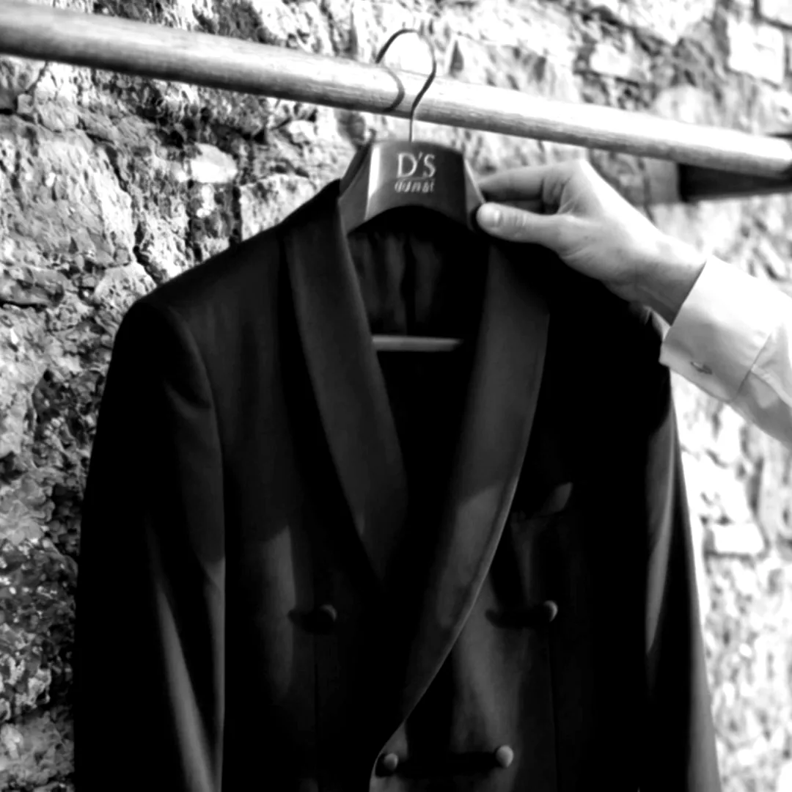
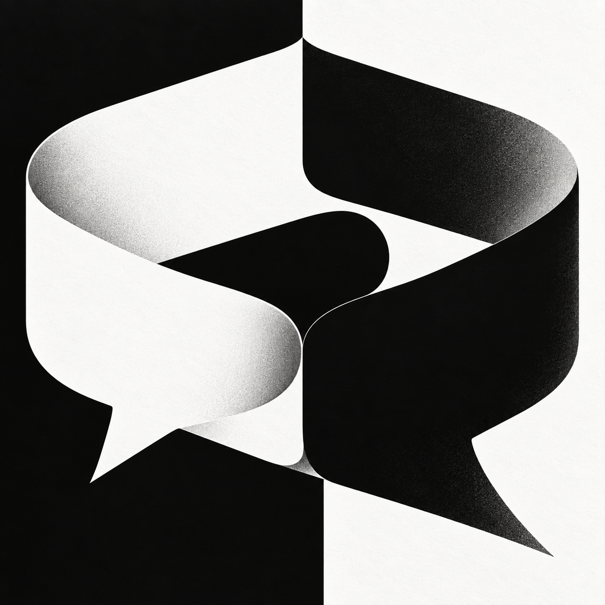
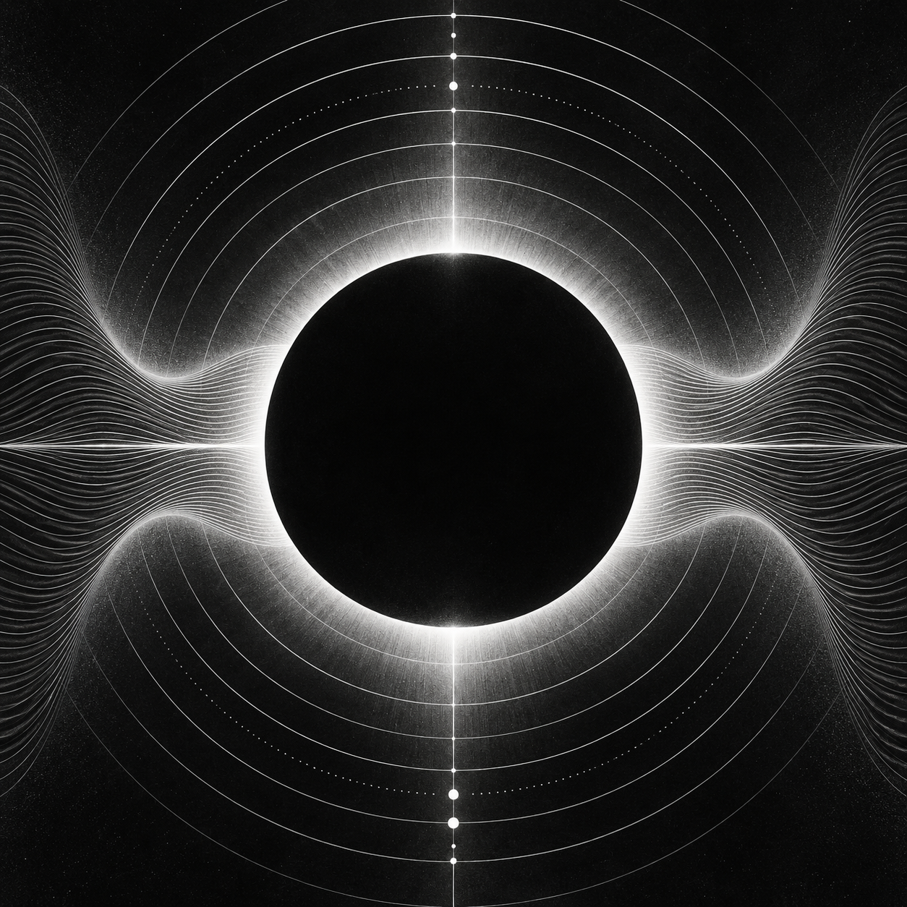
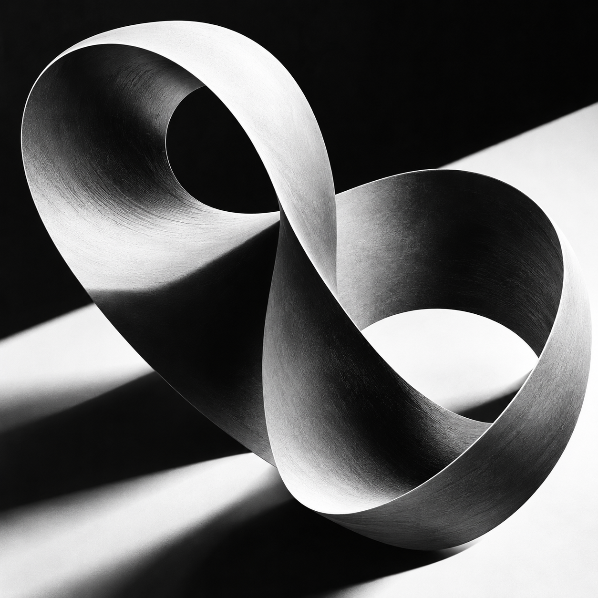

Sanat yönetimi
Kampanya ve sosyal medya tasarımı.

D’S Damat
Kolpa AI
Lumio
Form & MotionProje
Yaptıklarım
Berat Erdoğan Tasarımcı & Art Director
Projeler 01 / 04
← → gez · Space çevir · Enter aç
Kapak görselleri yapay zekâ ile üretildi.
Altavia’da Junior Art Director olarak çalışıyorum. Görsel tasarım, yapay zekâ ile görsel üretimi ve video işleri yapıyorum.
Kolpa AI ve Lumio, tasarlayıp geliştirdiğim kendi uygulamalarım.
Özgeçmişi indir ↗Diğer marka işleri: Toshiba, Pek Food, Odeabank.
Kampanya ve sosyal medya tasarımı.
Yapay zekâ ile görsel ve video üretimi.
Hareketli grafik ve video kurgu.
Arayüz tasarımı ve SwiftUI geliştirme.
Higgsfield / Kling / Veo / Midjourney / Photoshop / Illustrator / After Effects / Premiere Pro / Figma